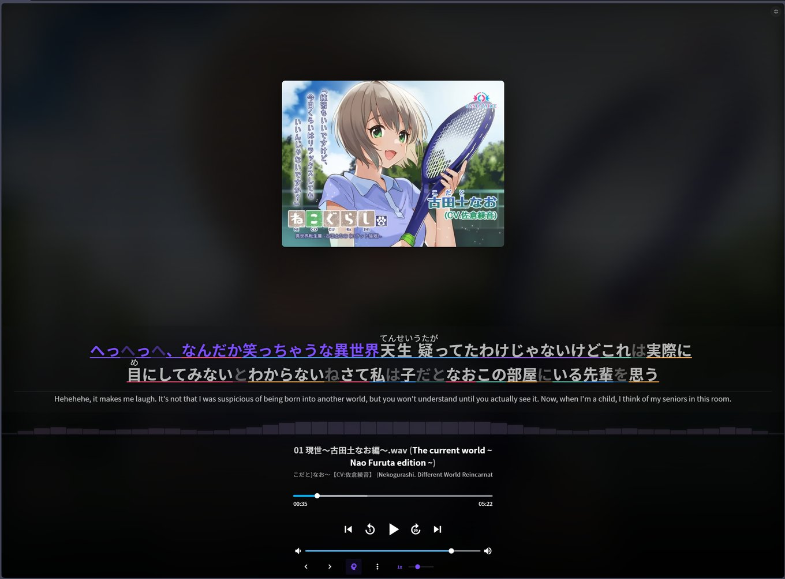

User Manual
A comprehensive guide to using Voiceworks Toolkit for Japanese language study.
Contents
Getting Started
After installing the userscript, browse to the platform. The toolkit activates automatically and you'll notice several enhancements right away:
- A new sidebar menu with Radio Mode and Playlist Mode toggles
- Keyboard shortcuts for playback control
- Infinite scroll replacing pagination
- Translated tags and UI elements (if translation models are downloaded)
- Progress tracking checkmarks on work cards
Most features work out of the box. AI-powered features (transcription, translation, semantic search) require a one-time model download or API key setup in Settings.

Settings & Configuration
Access the settings panel from the Settings page. The toolkit adds its own configuration sections alongside the native settings.
General Settings
- Language: Switch between English, Chinese, and Japanese UI localization
- SFW Mode: Hide all images and thumbnails for use in public environments
- Infinite Scroll: Toggle automatic page loading on scroll
AI Settings
- Whisper Model: Choose the transcription model size (tiny, small, medium) and quantization level. Larger models are more accurate but use more memory
- Whisper Language: Set the default transcription language (Japanese, English, Chinese, Korean, etc.)
- Translation Model: Download or update the local neural translation model. Status and progress are shown inline
- Jina API Key: Enter your free Jina API key to enable semantic vector search
Playback Settings
- Shuffle: Enable or disable shuffle for Radio and Playlist modes
- Auto-advance: Automatically move to the next work when the current one finishes
Learner Mode
Learner Mode displays dual-language subtitles during playback, designed for immersion-based Japanese study.
How It Works
- Navigate to any voicework with available subtitle files (LRC format) or enable Whisper for live transcription
- The primary line shows Japanese text (kana/kanji)
- The secondary line shows English translation, blurred by default
- Hover over the English line or press
Bto reveal the translation
Subtitle Sources
Learner Mode uses subtitles from these sources, in priority order:
- LRC files: Pre-existing lyric files bundled with the voicework
- Whisper transcription: Live speech-to-text when enabled (overrides static subtitles)
- Cached transcripts: Previously transcribed content is loaded instantly
Chinese Content
When Chinese-language subtitles are detected (CJK text without kana), they are automatically translated to Japanese via remote translation so the primary line always shows Japanese text. This ensures learners studying Japanese always see their target language first.
Tip: Use playback speed controls ([ and ] keys) to slow down audio during study. The lead-time setting in the player lets you read ahead before each line is spoken.
Live Transcription (Whisper)
The live transcription feature uses the Whisper speech recognition model to generate subtitles in real-time from any audio being played.
Enabling Transcription
- Click the microphone icon in the player controls
- On first use, the Whisper model will download (~150 MB). This is cached for future use
- Once loaded, transcription begins automatically as audio plays
Model Selection
Choose the appropriate model size in Settings based on your hardware:
- Tiny: Fastest, lowest memory, good for real-time use on modest hardware
- Small: Better accuracy, recommended for systems with WebGPU support
- Medium: Best accuracy, requires a capable GPU and sufficient memory
Caching
Transcripts are automatically cached per-track with a 90-day TTL. When you revisit a previously transcribed voicework, subtitles appear instantly without re-running the model.
Exporting
Download transcripts in standard subtitle formats:
- LRC: Lyric format, compatible with most music players and study tools
- VTT: WebVTT format, standard for web video subtitles
- SRT: SubRip format, widely supported by media players and Anki
Download buttons appear in the file tree and flat view after transcription completes.
Translation System
The toolkit includes two translation mechanisms that work together to provide comprehensive English translation across the interface.
Neural Translation (Local)
A local machine translation model runs entirely in your browser via a Web Worker. After downloading the model from Settings, it translates:
- Player track titles (Japanese/Chinese to English)
- Content tags across all pages
- Work card titles in grid and list views
- Circle and voice actor names
The model uses WebGPU for acceleration when available, falling back to WASM on older hardware. Translations are cached in a shared cache for instant reuse.
Interface Translation (Static)
A built-in translation map converts static UI elements (buttons, menus, sort options, labels) to English. This works immediately without any model download and covers the complete interface.
Performance
Translation requests are batched in an 8ms coalescing window and deduplicated to prevent redundant work. Single-text requests (like the currently playing track title) are prioritized over batch operations for minimal perceived latency.
Search & Discovery
Semantic Search
Semantic search lets you find voiceworks by meaning rather than exact keywords. This is particularly useful for finding content by theme or topic when you don't know the exact Japanese title.
- Enter your Jina API key in Settings (free tier available)
- Click the search icon in the header to open the Semantic Search dialog
- Type your query in any language
- Results are ranked by semantic similarity to your query
The vector index builds automatically in the background. You can also trigger manual indexing from the dialog. Embeddings are stored locally in IndexedDB and persist across sessions.
Advanced Search
The Advanced Search panel provides structured filtering:
- Tags: Filter by content tags with AND/OR logic
- Circle: Search by creator/circle name
- Voice Actor: Filter by voice actor
- Date Range: Limit results to a time period
- Rating & Price: Set minimum rating or price filters
Search history is saved for quick re-use of frequent queries.
Tag Filters
Click any tag on a work card or detail page to instantly filter by it. Active filters appear as removable chips and persist across navigation. Multi-tag filtering is supported — click additional tags to narrow your results.
Playback Modes
Radio Mode
Radio Mode provides continuous shuffled playback across your library, ideal for extended immersion sessions.
- Toggle Radio Mode from the sidebar menu
- Playback begins automatically with a randomly selected voicework
- When one work finishes, the next is selected randomly
- A short history buffer prevents frequent repetition
- Health-checking and auto-recovery keep the stream running through interruptions
Playback state persists across page refreshes. Radio Mode is mutually exclusive with Playlist Mode.
Playlist Mode
Playlist Mode enables sequential playback through curated collections.
- Open the Playlist Discovery panel from the sidebar
- Browse or search community-curated playlists
- Activate a playlist to begin sequential playback
- Use the forward/back controls in the player bar to navigate between works
Playlists auto-advance to the next voicework when the current one finishes.
Media Viewer
The Media Viewer provides a lightbox gallery for images and video files bundled with voiceworks.
Supported Formats
- Images: JPG, PNG, GIF, WebP
- Video: MP4, WebM, MOV, AVI, MKV
- Documents: PDF, TXT, SRT
Controls
- Click any media file to open the lightbox
- Use arrow keys or swipe to navigate between files
- Press
ESCto close - Enable slideshow mode for auto-advance
Keyboard Shortcuts
All shortcuts are disabled when focus is in a text input field.
| Key | Action | Context |
|---|---|---|
Space / K | Play / Pause | Player |
M | Mute / Unmute | Player |
F | Fullscreen toggle | Player |
Left Arrow | Seek back 5 seconds | Player |
Right Arrow | Seek forward 5 seconds | Player |
Shift + Left | Seek back 30 seconds | Player |
Shift + Right | Seek forward 30 seconds | Player |
Up Arrow | Volume up 5% | Player |
Down Arrow | Volume down 5% | Player |
[ | Decrease playback speed | Player |
] | Increase playback speed | Player |
0–9 | Jump to 0%–90% of track | Player |
B | Toggle English subtitle blur | Learner Mode |
J | Toggle Japanese subtitles | Learner Mode |
ESC | Close lightbox / Exit fullscreen | Media Viewer |
Left / Right | Previous / Next image | Media Viewer |
Backup & Restore
Export all your settings and preferences to a JSON file for safekeeping or transfer to another browser.
Export
- Open Settings
- Click Export Settings
- Save the downloaded JSON file
Import
- Open Settings
- Click Import Settings
- Select your previously exported JSON file
- Settings are applied immediately
Note: The export includes preferences, feature toggles, and configuration values. It does not include cached data (transcripts, translations, embeddings) as these are regenerated automatically.
FAQ
Does the toolkit send my data to external servers?
AI transcription and translation run entirely on your device — no audio or text is uploaded. The only external calls are: (1) Jina API for semantic search embeddings (if you provide an API key), and (2) Google Translate as a fallback for Chinese-to-Japanese translation when no local model is available. All other functionality is fully local.
What browsers are supported?
Any modern Chromium-based browser (Chrome, Edge, Brave) or Firefox with Tampermonkey installed. WebGPU support (Chrome 113+, Edge 113+) is recommended for optimal AI performance but not required — the toolkit falls back to WASM automatically.
How much disk space do the AI models use?
The Whisper transcription model uses ~150 MB and the translation model uses ~80 MB. Both are stored in the browser's cache storage and persist across sessions. You can choose smaller quantized variants in Settings to reduce memory usage.
Can I use custom Whisper models?
Yes. The model selection field in Settings accepts arbitrary Hugging Face model IDs. Type a custom model ID (e.g., from the onnx-community namespace) and the worker will attempt to load it. Suggested models are provided in a dropdown for convenience.
Why are translations slow on first load?
The neural translation model needs to be downloaded and initialized on first use. Once loaded, translations are cached and subsequent requests are near-instant. The model remains in memory for the duration of your browsing session.
How do I report bugs or request features?
Open an issue on the GitHub Issues page. Include your browser version, GPU model (if AI-related), and steps to reproduce.